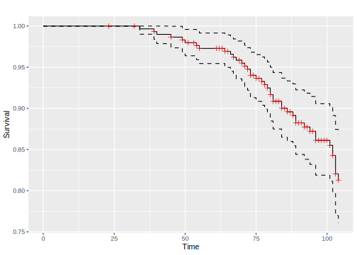
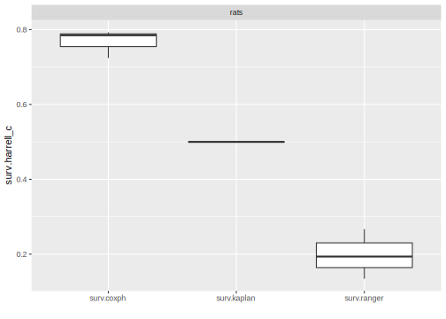

7.1 Survival Analysis
Survival analysis is a sub-field of supervised machine learning in which the aim is to predict the survival distribution of a given individual. Arguably the main feature of survival analysis is that unlike classification and regression, learners are trained on two features:
- the time until the event takes place
- the event type: either censoring or death.
At a particular time-point, an individual is either: alive, dead, or censored. Censoring occurs if it is unknown if an individual is alive or dead. For example, say we are interested in patients in hospital and every day it is recorded if they are alive or dead, then after a patient leaves it is unknown if they are alive or dead, hence they are censored. If there was no censoring, then ordinary regression analysis could be used instead. Furthermore, survival data contains solely positive values and therefore needs to be transformed to avoid biases.
Note that survival analysis accounts for both censored and uncensored observations while adjusting respective model parameters.
The package mlr3proba extends mlr3 with the following objects for survival analysis:
TaskSurvto define (censored) survival tasksLearnerSurvas base class for survival learnersPredictionSurvas specialized class forPredictionobjectsMeasureSurvas specialized class for performance measures
For a good introduction to survival analysis see Modelling Survival Data in Medical Research (Collett 2014).
7.1.1 TaskSurv
Unlike TaskClassif and TaskRegr which have a single ‘target’ argument, TaskSurv mimics the
survival::Surv object and has three-four target arguments (dependent on censoring type)
library("mlr3")
library("mlr3proba")
library("survival")
TaskSurv$new(id = "interval_censored", backend = survival::bladder2[,-c(1, 7)],
time = "start", time2 = "stop", type = "interval2")## <TaskSurv:interval_censored> (178 x 6)
## * Target: start, stop
## * Properties: -
## * Features (4):
## - dbl (2): enum, rx
## - int (2): number, size# type = "right" is default
task = TaskSurv$new(id = "right_censored", backend = survival::rats,
time = "time", event = "status", type = "right")
print(task)## <TaskSurv:right_censored> (300 x 5)
## * Target: time, status
## * Properties: -
## * Features (3):
## - int (1): litter
## - dbl (1): rx
## - chr (1): sex## [1] 101+ 49 104+ 91+ 104+ 102+## Registered S3 method overwritten by 'GGally':
## method from
## +.gg ggplot2
7.1.2 Predict Types - crank, lp, and distr
Every PredictionSurv object can predict one or more of:
lp- Linear predictor calculated as the fitted coefficients multiplied by the test data.distr- Predicted survival distribution, either discrete or continuous. Implemented in distr6.crank- Continuous risk ranking.
lp and crank can be used with measures of discrimination such as the concordance index.
Whilst lp is a specific mathematical prediction, crank is any continuous ranking that identifies who is more or less likely to experience the event.
So far the only implemented learner that only returns a continuous ranking is surv.svm.
If a PredictionSurv returns an lp then the crank is identical to this.
Otherwise crank is calculated as the expectation of the predicted survival distribution.
Note that for linear proportional hazards models, the ranking (but not necessarily the crank score itself) given by lp and the expectation of distr, is identical.
The example below uses the rats task shipped with mlr3proba.
task = mlr_tasks$get("rats")
learn = lrn("surv.coxph")
train_set = sample(task$nrow, 0.8 * task$nrow)
test_set = setdiff(seq_len(task$nrow), train_set)
learn$train(task, row_ids = train_set)
prediction = learn$predict(task, row_ids = test_set)
print(prediction)## <PredictionSurv> for 60 observations:
## row_id time status crank lp distr
## 3 104 FALSE 0.8711 0.8711 <VectorDistribution[60]>
## 5 104 FALSE -2.5385 -2.5385 <VectorDistribution[60]>
## 6 102 FALSE -2.5385 -2.5385 <VectorDistribution[60]>
## ---
## 293 75 TRUE -1.5681 -1.5681 <VectorDistribution[60]>
## 296 104 FALSE 1.8617 1.8617 <VectorDistribution[60]>
## 300 102 FALSE -1.5479 -1.5479 <VectorDistribution[60]>7.1.3 Composition
Finally we take a look at the PipeOps implemented in mlr3proba, which are used for composition of predict types.
For example, a predict linear predictor does not have a lot of meaning by itself, but it can be composed into a survival distribution.
See mlr3pipelines for full tutorials and details on PipeOps.
library(mlr3pipelines)
library(mlr3learners)
# PipeOpDistrCompositor - Train one model with a baseline distribution,
# (Kaplan-Meier or Nelson-Aalen), and another with a predicted linear predictor.
task = tsk("rats")
# remove the factor column for support with glmnet
task$select(c("litter", "rx"))
leaner_lp = lrn("surv.glmnet")
leaner_distr = lrn("surv.kaplan")
prediction_lp = leaner_lp$train(task)$predict(task)
prediction_distr = leaner_distr$train(task)$predict(task)
prediction_lp$distr## [1] NA# Doesn't need training. Base = baseline distribution. ph = Proportional hazards.
pod = po("compose_distr", param_vals = list(form = "ph", overwrite = FALSE))
prediction = pod$predict(list(base = prediction_distr, pred = prediction_lp))$output
# Now we have a predicted distr!
prediction$distr## WeightDisc1 WeightDisc2 ... WeightDisc299 WeightDisc300# This can all be simplified by using the distrcompose pipeline
glm.distr = ppl("distrcompositor", learner = lrn("surv.glmnet"),
estimator = "kaplan", form = "ph", overwrite = FALSE, graph_learner = TRUE)
glm.distr$train(task)$predict(task)## <PredictionSurv> for 300 observations:
## row_id time status crank.1 lp.1 distr
## 1 101 FALSE 0.579315 0.579315 <VectorDistribution[60]>
## 2 49 TRUE 0.004938 0.004938 <VectorDistribution[60]>
## 3 104 FALSE 0.004938 0.004938 <VectorDistribution[60]>
## ---
## 298 92 FALSE 1.068163 1.068163 <VectorDistribution[60]>
## 299 104 FALSE 0.493786 0.493786 <VectorDistribution[60]>
## 300 102 FALSE 0.493786 0.493786 <VectorDistribution[60]>7.1.4 Benchmark Experiment
Finally, we conduct a small benchmark study on the rats task using some of the integrated survival learners:
library(mlr3learners)
task = tsk("rats")
# some integrated learners
learners = lrns(c("surv.coxph", "surv.kaplan", "surv.ranger"))
print(learners)## [[1]]
## <LearnerSurvCoxPH:surv.coxph>
## * Model: -
## * Parameters: list()
## * Packages: survival, distr6
## * Predict Type: distr
## * Feature types: logical, integer, numeric, factor
## * Properties: weights
##
## [[2]]
## <LearnerSurvKaplan:surv.kaplan>
## * Model: -
## * Parameters: list()
## * Packages: survival, distr6
## * Predict Type: crank
## * Feature types: logical, integer, numeric, character, factor, ordered
## * Properties: missings
##
## [[3]]
## <LearnerSurvRanger:surv.ranger>
## * Model: -
## * Parameters: list()
## * Packages: ranger
## * Predict Type: distr
## * Feature types: logical, integer, numeric, character, factor, ordered
## * Properties: importance, oob_error, weights## <MeasureSurvCindex:surv.harrell_c>
## * Packages: -
## * Range: [0, 1]
## * Minimize: FALSE
## * Properties: -
## * Predict type: crank
## * Return type: Scoreset.seed(1)
bmr = benchmark(benchmark_grid(task, learners, rsmp("cv", folds = 3)))
bmr$aggregate(measure)## nr resample_result task_id learner_id resampling_id iters
## 1: 1 <ResampleResult[21]> rats surv.coxph cv 3
## 2: 2 <ResampleResult[21]> rats surv.kaplan cv 3
## 3: 3 <ResampleResult[21]> rats surv.ranger cv 3
## surv.harrell_c
## 1: 0.7671
## 2: 0.5000
## 3: 0.1984
The experiment indicates that both the Cox PH and the random forest have better discrimination than the Kaplan-Meier baseline estimator, but that the machine learning random forest is not consistently better than the interpretable Cox PH.
References
Collett, David. 2014. Modelling Survival Data in Medical Research. 3rd ed. CRC.